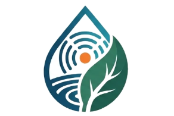
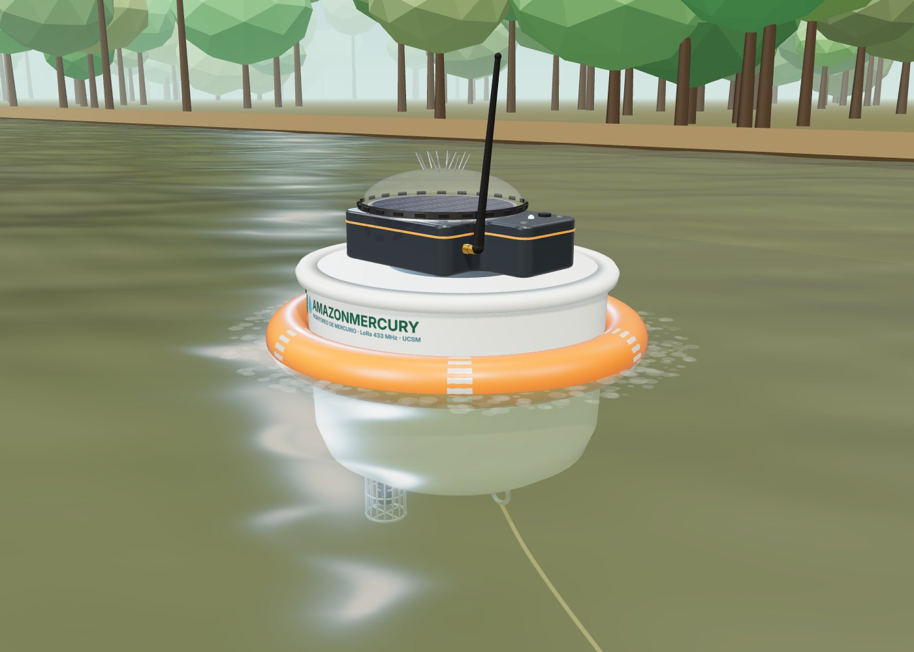
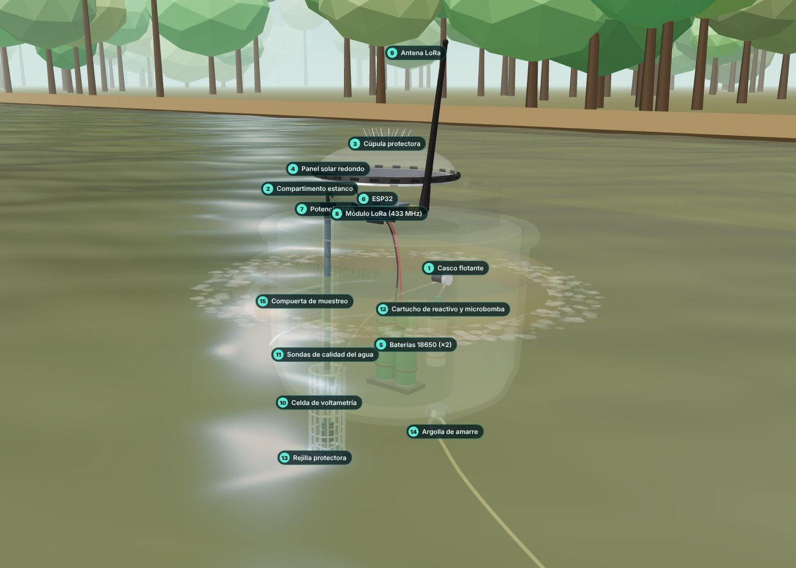
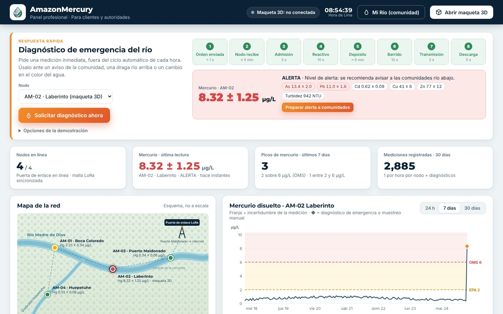
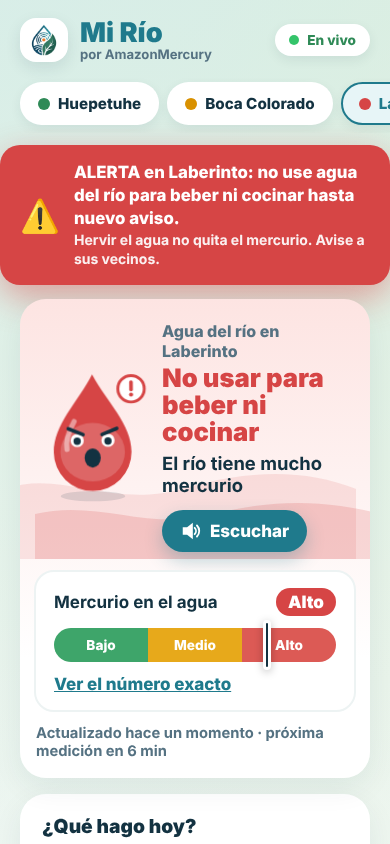
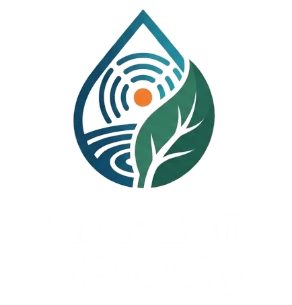

de mercurio vertidas en ríos del Perú en 20 años (MINAM, 2025)

AmazonMercury · Equipo EcoRaízShintuya, Madre de Dios
Bayolet se desmayó dos veces en el colegio. Tenía 5 años.
Tenía mercurio en el cuerpo. Su comunidad no tiene minería: llegó por el río, dentro de los peces.
Fuente: Mongabay Latam (2026).
El problema y la evidencia
El mercurio va donde va el río… y nadie lo ve llegar
de gestantes evaluadas en Madre de Dios sobre el límite en sangre (Duke, 2023)
niños de la Reserva Amarakaeri sobre el límite de la OMS (Mongabay, 2026)
¿Por qué falla hoy? Se mide a mano, pocas veces al año
En 2025 las muestras de la Contraloría en la quebrada Guacamayo salieron normales; otra medición de la ANA (2021–2025) halló mercurio sobre el estándar.
Nuestra solución
Un vigilante que flota en el río y avisa en minutos

- 1Mide cada hora
Toma una muestra y la analiza con voltametría: mercurio y otros 5 metales, por debajo de los límites de la OMS.
- 2Más datos del agua
Turbidez, pH, conductividad y temperatura. Si la turbidez se dispara, hay una draga río arriba.
- 3Transmite sin señal celular
Radio LoRa de nodo en nodo. Funciona solo con el sol: panel de 3 W y 2 baterías.
- 4Alerta en dos paneles
Uno profesional para quien paga y Mi Río para la comunidad, al mismo tiempo.
HgAsPbCdCuZn
0,07–0,4 µg/L límite de detección de la voltametría con electrodo de oro (INIS-OIEA)
6 µg/L valor guía de la OMS para mercurio en agua de consumo
Maqueta 3D + panel profesional + Mi Río, conectados
Alternativas que existen hoy
No somos los únicos. Somos los únicos que hacen esto.
Muestreo manual + laboratorio
Sondas multiparámetro comerciales
GalamSense (Ghana)
AmazonMercury
¿Cada cuánto mide?Pocas veces al añoContinuoContinuoCada hora + emergencias
¿Mide mercurio en el río?Sí, semanas después en laboratorioNormalmente noSí (Hg, Pb, As)Sí: 6 metales + 4 parámetros
¿Avisa a la comunidad?NoSolo al dueñoSíSí: Mi Río, SMS y radio
¿Quién lo cuida?Consultora externaEl clienteUniversidadGuardianes del Río locales
¿Está en el Perú?SíImportadasNo (demostración)Hecho en Arequipa para la Amazonía
GalamSense demuestra que la tecnología funciona. Nuestra ventaja es el servicio completo y local: medición + alerta a la comunidad + personas del lugar que lo mantienen.
Fuentes: GalamSense, KNUST (2026) · Protocolo nacional de monitoreo de calidad de agua, ANA · Instrumentos de gestión ambiental minera (D.S. 040-2014-EM).
Prototipo
Lo que ya construimos entre los dos

Casco, cúpula, panel solar de 3 W, 2 baterías, celda de voltametría, sondas y cálculo de energía.

Ciclo de medición animado, historial, mapa de nodos, alertas y diagnóstico de emergencia.

Panel simple para la comunidad, en el celular.
Los tres están conectados en tiempo real: el panel pide un diagnóstico, el nodo mide y Mi Río cambia de color.
Experimentación
Qué funciona, qué es simulado y qué falta validar
Funciona hoy
- Diseño completo del nodo (15 componentes)
- Maqueta 3D con el ciclo de medición
- Panel profesional y Mi Río, conectados en tiempo real
- Cálculo de energía y de costos por nodo
Con datos simulados
- Lecturas de los 6 metales y del agua
- Historial de 30 días y picos de mercurio
- Alertas y reportes de la comunidad
Aún no hay un nodo físico: el primer uso del capital es construir el nodo real.
Falta validar
- Precisión en agua real, frente a un laboratorio acreditado
- Energía real del nodo durante un mes
- Resistencia en el río (corriente, lluvia, golpes)
- Precio con mineras y entidades públicas
Cómo lo validaremos: tomaremos muestras en el mismo punto del río con el nodo y con un laboratorio acreditado por INACAL, y compararemos los resultados cada mes.
Impacto · Desafío Amazonía Viva
Más ventas = más ríos vigilados
Medimos cada horade pocas muestras al año a 8 760 por nodo
→
Alertamos en minutosa la comunidad y a la autoridad
→
Menos exposicióny evidencia para fiscalizar
mediciones al año con 18 nodos (meta a 24 meses)
nodos comunitarios gratuitos (1 por cada 5 vendidos)
empleos formales de Guardianes del Río, con capacitación
desde la medición hasta la alerta en Mi Río
6Agua limpia · meta 6.3
3Salud · meta 3.9
15Vida y biodiversidad · 15.1
¿Cómo lo verificamos?
Cada medición, alerta y tiempo de respuesta queda registrado en la plataforma. Un laboratorio acreditado por INACAL valida los datos cada mes, y publicamos un reporte abierto para la comunidad.
El negocio y la misión van juntos
5 nodos vendidos=1 nodo comunitario gratis+1 empleo local por cada 6 nodos
Viabilidad · 1
La minería paga. La comunidad recibe las alertas.
Panel profesional
Mismo dato,
al mismo tiempo
al mismo tiempo
Minería formal (principal) y sector público (secundario)
Comunidades río abajo: familias, pescadores, escuelas y postas
El cliente no puede editar ni ocultar los datos
Por cada 5 nodos vendidos financiamos 1 nodo comunitario
Viabilidad · 2
¿Por qué pagaría una minera?
Ya está obligada
Debe entregar informes de monitoreo de agua a la autoridad, con la frecuencia que fija su instrumento ambiental. Ya tiene presupuesto.
Conflictos activos
conflictos socioambientales vinculados a actividades extractivas (junio de 2026). El agua está detrás de la mayoría.
Multas del OEFA
impuestas en solo 100 días. Detectar una fuga a tiempo cuesta menos que una multa.
Ya lo hacen con la comunidad
empresas mineras trabajan con comités de monitoreo participativo. Nosotros lo hacemos continuo y creíble.
¿No es contradictorio? El mercurio de Madre de Dios viene de la minería ilegal. La formal necesita demostrar que no contamina, con datos que la comunidad crea.
Segundo cliente: gobiernos regionales y empresas de agua potable, también vía Obras por Impuestos.
Fuentes: OEFA, procedimiento de informes de monitoreo (D.S. 040-2014-EM) · Defensoría del Pueblo, jun. 2026 (vía Infobae) · OEFA, 100 días de gestión (nov. 2026) · Comités de Monitoreo y Vigilancia Ambiental Participativa (PNUD).
Viabilidad · 3
Monitoreo como servicio: todo incluido, pago mensual
Lo que cobramos
Minería formalS/ 1 800por nodo al mes
Sector públicoS/ 1 200por nodo al mes
InstalaciónS/ 1 500pago único por nodo
Incluye: equipo en comodato, Guardián del Río, electrodos y reactivo, plataforma, alertas y reporte mensual.
De cada S/ 1 800 al mes
Guardián
350 Laboratorio
200 Margen bruto
S/ 1 031 · 57 %
350 Laboratorio
200 Margen bruto
S/ 1 031 · 57 %
- Guardián del Río (S/ 1 600 de sueldo, 30 % más que el mínimo, a cargo de 6 nodos)
- Validación mensual con laboratorio acreditado
- Electrodos y reactivo (S/ 81)
- Plataforma, SMS y repuestos (S/ 50)
- Equipo (≈ S/ 3 150 en 3 años = S/ 88)
Supuestos que validaremos primero:
precio con 3–5 mineras1 Guardián cada 6 nodoselectrodo cada 3 semanascontratos de 24 meses
Cifras estimadas por el equipo, por validar con clientes. Sueldo mínimo vigente: S/ 1 230 (D.S. 015-2026-TR). Gastos fijos del equipo: ≈ S/ 7 000 al mes.
Siguiente paso
Un piloto real en Madre de Dios con S/ 10 000
¿Para qué es el dinero?
63 % 2 nodos reales
25 % Lab.
12 %
- S/ 6 300 construir 2 nodos con sus sensores
- S/ 2 500 validar las mediciones con un laboratorio acreditado
- S/ 1 200 traslado e instalación del piloto
- Mes 4
Prototipo real validado
Comparamos el nodo con un laboratorio acreditado.
- Mes 9
Piloto en Madre de Dios
2 nodos en el río y los primeros Guardianes capacitados.
- Mes 15
Primer cliente que paga
3 nodos con una minera formal.
Riesgos y cómo los cubrimos:
Precisión → validación mensual con laboratorioRobo o daño → custodia de la comunidadCosto del potenciostato → diseño propio a escala
Equipo EcoRaíz
Dos perfiles que se complementan
CEO · Producto y datos
Erick Elias Cardeña Maque
Software, datos y negocio
- Creó la maqueta 3D y las dos plataformas
- Lidera ventas, alianzas y finanzas
- Responsable de la relación con clientes
+
Lo que uno construye, el otro lo convierte en datos
CTO · Hardware y campo
Jhan David Cutipa Poma
Electrónica, sensores y energía
- Diseñó el nodo y su sistema de energía
- Lidera la fabricación y la validación
- Forma y coordina a los Guardianes del Río
Red de apoyo que buscamos:
Asesor en química analíticaMentoría · Incubadora ScaleAliado amazónico · CINCIA o FENAMAD
El mercurio no se ve, no se huele y no avisa.
Nosotros sí.
Inviertan en AmazonMercury y ayúdennos a que los ríos de la Amazonía puedan avisar a tiempo.

¡Gracias!
Equipo EcoRaíz · Incubadora Scale
erick-ucsm.github.io/AmazonMercury